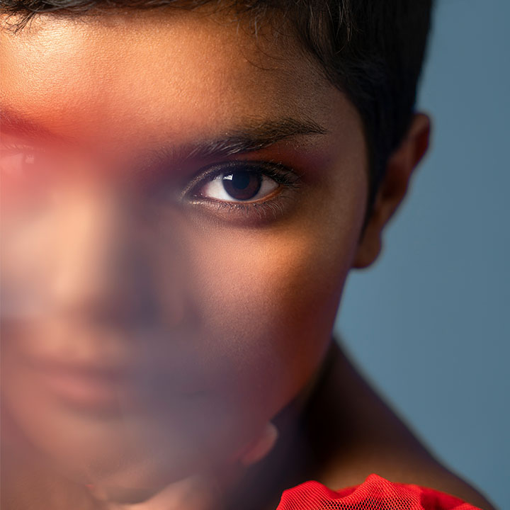
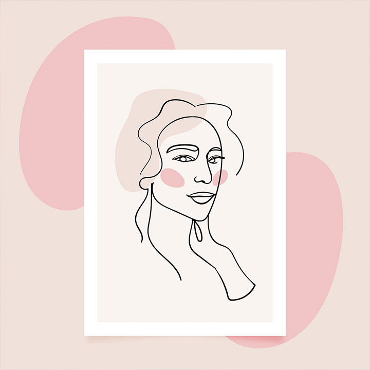
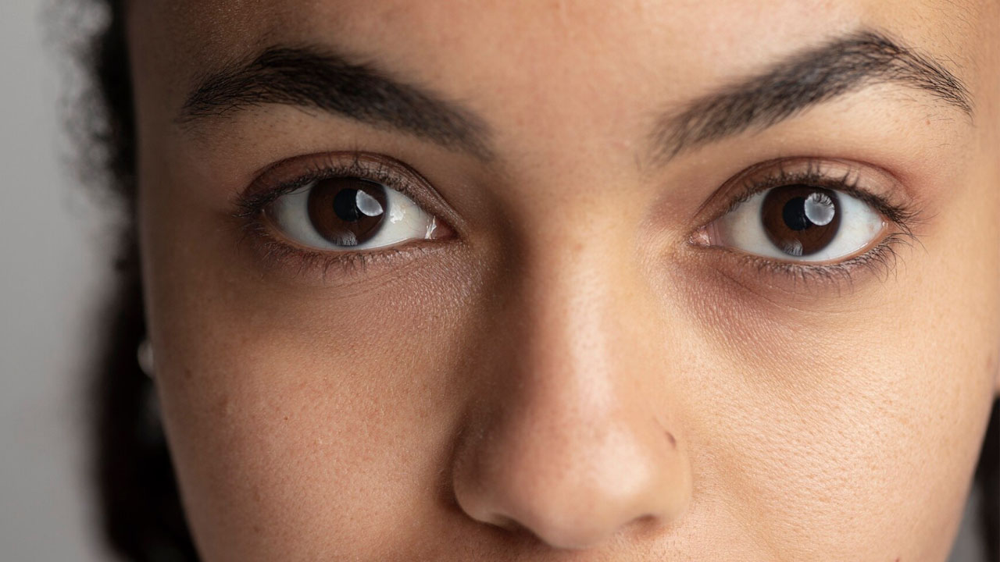

Invisibilidade e preconceito com os povos ciganos
Ao final desta aula, você será capaz de:
- Reconhecer conceitos e definições atribuídas aos povos ciganos ao longo da história.
- Analisar exemplos de invisibilidade e preconceito presentes na literatura, cinema e mídia.
- Refletir criticamente sobre os efeitos sociais dos estereótipos.
- Propor alternativas de valorização cultural e combate ao anticiganismo.
Breve introdução: A (não) definição de “ciganos”
Confira o poema a seguir:

Eu canto porque o instante existe
e a minha vida está completa.
Não sou alegre nem sou triste:
sou poeta.
Irmão das coisas fugidias,
não sinto gozo nem tormento.
Atravesso noites e dias
no vento.
Se desmorono ou se edifico,
se permaneço ou me desfaço,
— não sei, não sei. Não sei se fico
ou passo.
Sei que canto. E a canção é tudo.
Tem sangue eterno a asa ritmada.
E um dia sei que estarei mudo:
— mais nada.
É impossível desconhecer a virulência da linguagem de Cecília Meirelles que escreveu sobre o cio da vida, mais precisamente a sua e nos convida a uma profunda reflexão. Cecília Meirelles é poeta cigana, e o metapoema em epígrafe, assim como a penetrante obra da também artista cigana Ceija Stojka são exemplos de arte que se voltam sobre o seu próprio processo de construção. Ser cigana e falar de si será o esforço dessa aula. Discutir invisibilidade e preconceito para com os povos ciganos coloca-nos no contexto da tematização da Linguagem tanto em seu aspecto literal quanto metafórico. Literal quando discutimos a definição nos Dicionários. Vejamo-los: Padre Raphael Bluteau, no século XVIII, em Portugal, editou o primeiro dicionário da Língua Portuguesa que, segundo Filho, trazia a seguinte definição sobre cigano:
“Vulgo dá a uns homens vagabundos e embusteiros que se fingem naturais do Egito e obrigados a peregrinar pelo mundo sem assento nem domicílio permanente, como descendentes dos que não quiseram agasalhar o Divino Infante quando a Virgem Santíssima e S. José peregrinaram com ele pelo Egito.”
(FILHO, 1981, pg. 13)
A forma como os dicionários registram termos e expressões influencia diretamente a percepção social sobre determinados grupos. No caso do verbete cigano, tanto o Dicionário Houaiss da Língua Portuguesa quanto o Dicionário Aurélio apresentam definições que, além de revelar aspectos culturais, também reforçam estereótipos e preconceitos históricos. A seguir, estão destacados os significados atribuídos em cada uma dessas obras.
pan_tool_alt Clique Toque nas abas para visualizar as informações.
Reconhecido pela sua abrangência e completude, resultado da pesquisa e dedicação do intelectual, crítico e diplomata Antônio Houaiss, o dicionário traz no verbete cigano os seguintes significados:
- “que ou aquele que trapaceia; velhaco, burlador”;
- “que ou aquele que faz barganha, que é apegado ao dinheiro; agiota, sovina” (2009).
Obra emblemática por incorporar termos literários, gírias e regionalismos, consolidando-se como referência para o idioma. Nesse dicionário, o cigano é descrito como:
- “povo que se dedica à música, vive de artesanato, de ler a sorte”;
- “indivíduo boêmio, erradio, de vida incerta, negociante, esperto, vivo” (2024).
Observação: o termo erradio, utilizado no verbete, tem como sinônimo “vagabundo”, reforçando uma visão discriminatória.
E metafórico também, o que, com certo ar de crueldade torna o desafio do vencer preconceito ainda mais complexo e torna o racismo étnico ainda mais perverso, pois faz com que passe despercebido. Quando não se consegue identificar a ameaça, nem mesmo se reconhece que existe o preconceito, mas ela se fortalece e intensifica, além disso, na maioria das vezes, o que se conhece sobre os povos ciganos, não é de fato algo que nos identifica, que nos representa, mas sobretudo estereótipos, imagens deturpadas. As designações atribuídas por não ciganos para os ciganos foram assumidas como a verdade sobre a etnia, como se o cigano não existisse, ou desejando viver escondido, precisasse ser tutelado e não pudesse falar de si mesmo.
Um mito muito popular na Europa medieval, atualmente pouco difundido e já entendido como equivocado, era de que os ciganos vinham do Egito. Essa relação provavelmente surgiu devido à semelhança entre as palavras "Gypsy" (em inglês) ou "Gitanos" (em espanhol) e "Egyptian" (egípcio). Costa & Vasconcelos dizem também que o “termo cigano e suas variações em diferentes línguas – cygani, tsigan, zigeneuner – são derivados da palavra grega Atsingani, que significa não toque, intocáveis” (COSTA & VASCONCELOS, 2015, p.13).
O termo ‘cigano’, usado agora entre aspas, é, categoria imposta. Foi criado/atribuído por grupo dominante (não cigano), e não revela daquilo que está sendo representado. Reflete tão somente perspectivas, interesses e estruturas de poder externas, em vez de representar os próprios indivíduos que se identificam ou se definem. Esse termo é generalista e esconde vários povos com línguas e costumes diversos sob um mesmo nome. Também carrega, como vimos, um aspecto pejorativo. O termo politicamente correto para designar os ‘ciganos’ seria povos Romani que designa toda pessoa pertencente a esta etnia, incluindo os Calón, os Rom e os Sinti, porém esse termo não é tão popular, não é muito utilizado entre nós, muito porque, entre as diversas formas de violência e exclusão que estamos expostos, está a de oportunidades e políticas sociais e que, fazem desse debate, questão de segundo plano dado a emergência de demais agendas.
Antecipa-se desde já que não se medirá força e não se tentará defender um em detrimento do outro. Não se pretende render loas à proliferação de uma espécie de disputas terminológicas, apenas reconhecer a leitura do termo preferível, povos Romani, que dormita de um grande vitalismo, muitas vezes fora do alcance de olhares menos atentos e vasculhadores.
Em 2012, o Ministério Público Federal (MPF) entrou com uma ação judicial para retirar o dicionário Houaiss de circulação, alegando que a palavra "cigano" era definida de forma preconceituosa e racista. O MPF recomendou às editoras que retirassem qualquer expressão preconceituosa ou pejorativa da palavra "cigano" nas próximas edições. Algumas editoras atenderam à recomendação, enquanto outras optaram por não acatá-la. No entanto, o juízo da 19ª vara Federal de MG julgou improcedentes os pedidos. O relator no TRF da 1ª região considerou que a escolha das palavras é do autor ou editor, e que o dicionário é um registro de informações e significados. O dicionário Houaiss não tem mais o verbete ‘cigano’ na sua versão eletrônica.
- A Campanha "Sou cigano, não sou trapaceiro" foi uma iniciativa criada para combater estereótipos e preconceitos contra os povos ciganos, promovendo a valorização da cultura e identidade. Essa campanha surgiu como uma resposta à discriminação histórica que associa os ciganos a características negativas, como desonestidade ou marginalidade, e teve como objetivo desconstruir esses mitos.
Discussão sobre tema: “Minha (pátria) Romani-chib é minha língua”

Nossos olhos são escuros
Os vossos, claros.
Com vossos olhos claros vós
Vedes o mundo como nós
E nós,
Com nossos olhos escuros,
Vemo-lo como vós.
Papusza, que significa boneca em romani, foi o nome artístico da poeta cigana Bronislawa Wajs (Polônia, 1908-1987). Reconhecida como uma prodigiosa e brilhante voz lírica, Papusza deixou uma obra de grande relevância, na qual retratava a Segunda Guerra Mundial, a opressão e as experiências desafiadoras vividas pelo povo cigano. Apesar de sua importância, permaneceu esquecida durante um período, retornando apenas recentemente ao cenário global, quando se tornou tema de uma obra cinematográfica de forte apelo midiático, que destacou sobretudo o aspecto trágico de sua trajetória.
Papusza foi genial, ousada e incompreendida. Estava à frente de seu tempo e sua produção literária nos convida à reflexão. Representou de maneira singular a interseção entre identidade cultural e expressão étnica cigana no mundo gadjo (não cigano).
Seu nome aparece frequentemente associado ao termo pária, expressão que inspira a construção deste capítulo: Papusza, pária social. A entrada dessa palavra na cultura e no vocabulário político ocidentais é permeada por paradoxos e ironias. Curiosamente, sua origem remonta à Índia. Como resume Varikas:
“Do século XVI ao século XVIII, o termo pária, cunhado por viajantes ocidentais, oficiais do império ou missionários para designar a degradação dos marginalizados na Índia, era corrente em círculos letrados portugueses, ingleses, franceses, alemães e holandeses. No discurso iluminista - e ao longo do século XIX -, o termo adquiriu um novo sentido, relacionado à conotação cada vez mais pejorativa de "casta". Assim, a metáfora do pária representa uma expressão idiomática de crítica à autoridade arbitrária e à exclusão social e política persistente. Graças à literatura, ao teatro e à opera, ela adentra os espaços públicos literário e plebeu europeus, dando nome às hierarquias modernas invisíveis e denunciando a construção desumanizadora do outro em um mundo que alega ter a universalidade dos direitos humanos como seu princípio fundador.”
(VARIKAS. 2010. p. 33)
A origem dos ciganos sempre despertou interesse de pesquisadores e linguistas. Desde o século XVIII, diversos estudos foram realizados comparando a língua Romaní com outros idiomas, sobretudo as línguas indianas, em busca de pistas sobre sua história e ancestralidade.
A seguir, apresentamos uma linha do tempo que mostra os principais marcos e pesquisadores que contribuíram para a compreensão da origem dos ciganos.
Defende que os ciganos são um só povo, de origem indiana, com idioma próximo ao persa e ao hindu.
Sustenta a mesma hipótese de origem indiana para os ciganos.
Publica História dos Boêmios ou quadro dos hábitos, usos e costumes deste povo nômade, afirmando que os ciganos vieram da região de Gujarat (Índia).
Compara o Romaní às línguas indianas e identifica semelhanças.
Publica Os ciganos na Europa e na Ásia — obra de maior rigor metodológico. Conclui que o Romani é um único idioma, diretamente ligado às línguas indo-arianas do norte da Índia.
Os ciganos descendem dos Rajputs, guerreiros do noroeste da Índia. Após a invasão muçulmana no século XI, migraram para o Ocidente (Oriente Médio e Europa), levando tradições, cultura e a língua Romani.
O Romani-chib é um elemento central da identidade cultural dos povos ciganos transmitindo tradições, pertencimento, ancestralidade e identidade. Tem influência das línguas dos diversos países das diásporas, elementos variados que trazem pertencimento dos troncos étnicos que a compõem, variação no vocabulário que inclui palavras/termos comuns às vistas, incorpora empréstimos linguísticos de línguas locais com seus usos de declinações, regionalismos. O Chibi dos Calon constitui um repertório lexical com palavras derivadas do romaní e do caló falado pelos ciganos na península Ibérica, acrescido de palavras derivadas do Português. O Romaní falado pelos Rom tem uma estrutura linguística diferente Chibi falada pelos Calóns, por exemplo. Predominantemente oral e mantida assim durante séculos, por não ser padronizada, dificultou a criação de um único sistema de escrita; hoje, com as necessidades modernas, a escrita da língua tem sido uma realidade cada vez mais presente, atualmente um dos principais mecanismos de preservação e continuidade, mas ainda falada e conhecida apenas entre ciganos, mantida como marcador, forma de proteção, maneira de assimilar a nossa identidade e uma estratégia de sobrevivência, ou seja, desconhecida do mundo gajon. Gajon é a palavra usada para falar dos não ciganos:
"O que é uma palavra? A reprodução de um estímulo nervoso em sons. Mas deduzir do estímulo nervoso uma causa fora de nós já é o resultado de uma aplicação falsa e injustificada do princípio da razão.
Que é então a verdade? Um exército móvel de metáforas, de metonímias, de antropomorfismos, numa palavra, uma soma de relações humanas que foram poética e retoricamente intensificadas, transpostas e adornadas e que depois de um longo uso parecem a um povo fixas, canônicas e vinculativas: as verdades são ilusões que foram esquecidas enquanto tais, metáforas que foram gastas e que ficaram esvaziadas do seu sentido, moedas que perderam seu cunho e que agora são consideradas, não já como moedas, mas como metal."
(NIETZSCHE, 1983, p.47)
Nietzsche, filósofo moderno e um dos mais influentes no pensamento ocidental, a linguagem não é uma ferramenta neutra que descreve a realidade objetivamente. Segundo ele, o estímulo nervoso se converte em imagem e a imagem é decodificada em som. As palavras são metáforas gastas que perderam seu ‘valor’, que não correspondem às essências das coisas, fato este ‘esquecido’ no decorrer do processo de consolidação das asserções. A linguagem não é meio de significação/revelação da verdade da coisa à qual se refere, radicalmente tudo é metáfora. No pensamento nietzschiano, “acreditamos saber algo das coisas mesmas, se falamos de árvores, cores, neve e flores, e, no entanto, não possuímos mais do que metáforas das coisas, que de nenhum modo correspondem às entidades de origem” (NIETZSCHE, 1983, p. 47), a crítica se volta, portanto, contra a busca da verdade “única e inabalável”, a busca que engendra todas as formas violentas, impositivas, restritivas e de estancamento do movimento inarredável do pensamento, da vida. Fez-se dessa busca incansável da verdade um subproduto da dimensão moral que serviu de estrutura para sustentar políticas persecutórias, discriminatórias, sectárias que precisamos abolir. É a destruição afirmativa que o pensamento nietzschiano sobre linguagem vem requisitar que nos inspira e nos convida a pensar sobre Invisibilidade e Preconceito com os Povos Ciganos e através dessas reflexões devemos desfazer as continuidades irrefletidas.
Charles Chaplin (1889–1977), um dos maiores cineastas, atores e comediantes da história do cinema, tinha origem cigana. Há evidências documentais que comprovam essa descendência, além da defesa pública de sua família pelo povo cigano.
Seu personagem mais famoso, “O Vagabundo”, é um marco na história do cinema, é o personagem mais icônico de Chaplin e representa mais do que comédia. É uma metáfora para a luta humana em um mundo de desigualdade e preconceito.
Contextualização: Como os olhos (não) veem, é como o coração sente
"Enterrem-me de pé porque passei toda
a minha vida de joelhos"
A frase marcante e arrebatadora dita por um cigano em entrevista concedida à jornalista e escritora chilena Isabel Allende, referência latino-americana por sua escrita envolvente e temas sobre identidade, memória e resistência, está no contexto adequado ao trabalho no sentido de enterrado de pé, depois de viver uma vida de joelhos, simboliza a luta pela dignidade, liberdade e justiça. Um desejo de ser lembrado como alguém que, apesar das adversidades, manteve sua coragem e resistência, alguém que embora forçado a viver de joelhos, conserva a dignidade e o espírito de resistência e o desejo de se manter de pé, tanto fisicamente quanto simbolicamente. É possível visualizar tamanha força dessas palavras mesmo que no Brasil não tivéssemos vivido experiências discriminatórias tal como as vividas por comunidades ciganas europeias. Não viver semelhante tragédia não nos deixou livre da exclusão e do apagamento. Analisando essa passagem “Capitu, apesar daqueles olhos que o diabo lhe deu... Você já reparou nos olhos dela? São assim de cigana oblíqua e dissimulada. Pois apesar deles, poderia passar, se não fosse a vaidade e a adulação. Oh! a adulação!” (ASSIS, 1994). A citação acima é de um livro bastante conhecido da literatura brasileira. Trata-se do livro ‘Dom Casmurro’, escrito por Machado de Assis e publicado primeiramente em 1899. O autor provavelmente não tinha o intuito de apresentar uma imagem negativa dos povos ciganos através da personagem Capitu. Contudo, o fato dele ter afirmado, através da narrativa feita por Bentinho, que a personagem possui “olhos...de cigana oblíqua e dissimulada” (1994) nos diz mais sobre a imagem que a sociedade gadjon possui sobre os ciganos do que sobre o autor.
A imagem de sedução atribuída às mulheres ciganas também aparece no livro Notre-Dame de Paris (1831), escrito por Victor Hugo e que posteriormente se tornou um filme bastante conhecido: O Corcunda de Notre-Dame Nele há uma personagem cigana chamada Esmeralda, que é bastante sensual. Alguns artistas utilizam da temática cigana para construir carreira musical em cima do estereótipo atribuído aos povos ciganos. Uma carreira de bastante sucesso, cabe pontuar.
Mas uma imagem é produzida para que algo ou alguém se torne visível. Geralmente achamos que visibilidade corresponde a algo positivo, mas nem sempre é o caso. A visibilidade também pode ser responsável pela produção de uma imagem negativa. A questão, então, é como algo ou alguém se torna visível. A filósofa estadunidense Bell Hooks nos dá uma pista ao falar sobre o olhar no seu livro Olhares Negros: Raça e Representação (1992), que o dispositivo do olhar se refere ao conjunto de normas, crenças, estereótipos, práticas sociais e estruturas de poder que moldam a forma como vemos e percebemos a nós mesmos e às demais pessoas. Isso inclui como somos representados na mídia, como somos tratados socialmente e como internalizamos as expectativas impostas sobre nós. Assim, sendo a visibilidade é o efeito de um olhar, ela é produzida por uma estrutura social. Se esta estrutura social trata os ciganos negativamente, a visibilidade que se terá no interior dessa estrutura social não será nada boa, daí o estereótipo de que ciganos são ladrões, preguiçosos e que as ciganas são sempre sedutoras; uma imagem que também é atribuída aos povos indígenas e africanos.
O filósofo e psiquiatra Frantz Fanon relata o seguinte sobre a condição dos povos africanos no seu livro Peles Negras Máscaras Brancas (1952):
“(…) os movimentos, as atitudes, os olhares do Outro me fixaram ali, assim como uma solução química é fixada por um corante. Eu estava indignado; exigi uma explicação. Nada aconteceu. Explodi. Agora os fragmentos foram remontados por outro eu. Esse “olhar”, do – por assim dizer – lugar do Outro, nos fixa, não apenas em sua violência, hostilidade e agressão, mas na ambivalência do seu desejo.”
(FANON, 1952, p.64)

Essa ambivalência em relação ao desejo mencionado diz respeito a situações em que cantores, artistas e outros representantes da cultura popular incorporam ou se apropriam de elementos culturais associados a determinados grupos ciganos, obtendo reconhecimento e, em alguns casos, retorno financeiro. Essa situação evidencia um contraste: os mesmos elementos culturais podem ser valorizados e consumidos socialmente, enquanto as próprias comunidades ciganas ainda podem enfrentar preconceito, discriminação, estigmatização e desigualdades sociais. Isso é um tanto curioso, pois a mesma sociedade que permite cantores e artistas serem famosos e obterem riqueza, é a mesma que criminaliza e empobrece as etnias ciganas. Como disse Fanon, o olhar do outro nos fixa, nos coloca num lugar do qual não esperam que saiamos. Esse lugar fixo, essa imagem que não muda, é o que sustenta o preconceito, que nada mais é que uma concepção que se tem sobre alguém antes mesmo de conhecer esse alguém. Produções cinematográficas, novelas, músicas, literatura etc. colaboram para a sustentação dessa imagem fixa. Observa-se, por exemplo, a presença de programas de televisão e outros produtos da mídia que apresentam determinados costumes e tradições associados aos povos ciganos de forma generalizada, podendo reforçar estereótipos e transmitir uma visão limitada sobre a diversidade e a realidade concreta das diferentes comunidades ciganas, sem dizer em qualquer momento que o que está sendo apresentado não corresponde à realidade concreta dos povos ciganos.
Mas como surge o preconceito? Quem pode nos ajudar a encontrar a resposta é o filósofo racionalista holandês Baruch Spinoza. Para o filósofo, há três gêneros de conhecimento:
- a imaginação (o primeiro gênero).
- a razão (o segundo).
- ciência intuitiva (o terceiro).
Neste momento nos interessa o primeiro gênero de conhecimento, que é o imaginativo. Segundo Spinoza, ele é responsável pelas superstições, pelo senso comum, pela mera receptividade de ideias sem questioná-las, ou seja, a pessoa que não vai além do primeiro gênero de conhecimento, fica presa aos estereótipos, às imagens que ela apenas recebeu passivamente. Veja, a imaginação em si não é um problema. O problema surge quando não vamos além das imagens que nos são passadas socialmente. Sabe quando temos um certo preconceito com alguém e, depois de uma boa conversa, a gente passa a ter uma outra imagem sobre essa pessoa? Para Spinoza, isto é ser um agente ativo na produção do imaginário. A liberdade não pode ser alcançada através do primeiro gênero de conhecimento. Logo, não há liberdade enquanto os preconceitos e a visibilidade negativa prevalecerem. O próprio Fanon, anteriormente mencionado, dizia que ele, enquanto homem negro, queria ser apenas um homem em meio aos outros homens, isto é, que as suas qualidades fossem percebidas ao invés de ser reduzido à imagem de um “homem negro” (e todo o estereótipo atribuído a ele) e que a história dos povos africanos é também parte da história da humanidade.
Há um ditado popular que diz que “o que os olhos não veem, o coração não sente”. Poderíamos reescrevê-lo: é o modo como os olhos veem que faz com que o coração sinta de um jeito. Se o modo como olhamos para as pessoas é baseado no preconceito e não no conhecimento verdadeiro sobre essas pessoas, o nosso coração será incapaz de amar, de ser empático e de se solidarizar.
Não restam dúvidas sobre o quanto os ciganos estão lutando e disputando lugar de fala sobre as mais diversas frentes e só se tem a dimensão de quanto é uma empreitada dificílima, quem está se movimentando para grandes mudanças nesse sentido.
- Diva e as Calins de Mato Grosso é uma websérie etnodocumental em cinco episódios sobre os saberes e tradições das mulheres ciganas Calon de Mato Grosso. O terceiro episódio retrata a trajetória de Nilva Rodrigues Cunha, ativista política há mais de 30 anos, diretora de mulheres da AEEC-MT e referência na preservação dos trajes tradicionais. Nilva, prima-irmã de Diva, domina a língua cigana e se destaca como contadora de histórias e liderança dentro e fora da comunidade.
Conclusão"Ciga-nós
"Eu apenas amo as palavras!"
Não se julgam concluídas as análises necessárias aos tópicos evocados nesta aula, por compreensão de ser uma temática complexa comungada a uma gama também complexa de referências. Por isso, tão somente temos a pretensão de suscitar debates que possam indicar caminho mais adequado e oportunos de serem seguidos, ou no mínimo atenuem eventuais resultados imputados como insuficientes e contestáveis:
“O povo cigano, constituído por várias etnias, possui uma longa história de perseguição e violência no território europeu. Desde a sua chegada aos territórios da Valáquia e da Moldávia, os ciganos foram sistematicamente escravizados e assim permaneceram durante muitos séculos, até a edição de leis abolicionistas na metade do século XIX. O ápice dessa perseguição foi alcançado no período do nazismo. Entre os anos de 1933 e 1945 estima-se que cerca de 500 mil ciganos tenham sido assassinados dentro e fora dos campos de concentração, no episódio conhecido como o “Holocausto Romani”, “Porrajmos” (“A Devoração”) ou ainda “Samudaripen/ Sa Madaripen” (‘o assassinato de todos’). Outros sobreviventes foram esterilizados.”
(BRASIL DE FATO. 2024)
Esse movimento trôpego cunhado na história da humanidade, cristalizada sobre o espectro fantasmagórico do racismo e do ódio não demonstra, ainda, superação e esgotamento. Jocosamente, a condição dos povos ciganos em nossa contemporaneidade nos possibilita a pondera que o preconceito e a discriminação contra estes povos não é um tema que se restringe a um passado longínquo. Nesse sentido, há uma persistência vivida com novas e múltiplas formas de manifestações e intervenções.
"Isso porque, de forma correlata à histórica discriminação por motivos étnicos, o povo cigano também tem sido alvo de outra forma de preconceito dirigido às pessoas pobres, em situação de rua ou indigência – trata-se da aporofobia, discriminação contra a pobreza e os pobres. "
(BRASIL DE FATO. 2024)
Por exemplo, um dos diversos casos de aporofobia ocorreu em Madrid, em março de 2016, quando torcedores do time de futebol holandês humilharam mulheres da etnia cigana no centro da cidade. Existem muitas outras situações semelhantes de desqualificação, injustamente nutridas e disseminadas na Europa contemporânea. Isso reforça a necessidade de garantir os direitos humanos, sempre alicerçados no respeito.
"Com base nessa realidade, o Conselho da Europa, sensível à questão, editou as Resoluções 2153/2017 e 2509/2019, recomendando aos países-membros uma série de medidas, especialmente no que tange ao acesso das crianças ciganas à educação. Em seu preâmbulo, a Resolução 2153 informa que “são estimados perto de 11 milhões de ciganos e viajantes vivendo na Europa hoje. Na média, eles são desproporcionalmente pobres. Precário padrão de condições de vida, inadequado acesso aos cuidados de saúde, baixa renda, alto desemprego e discriminação no acesso à educação são a realidade diária para muitos ciganos e viajantes. Preconceito, incitação ao ódio e falta de confiança entre estes grupos, a população em geral e as autoridades públicas agravam essa situação e dificultam a superação destes problemas”.
(BRASIL DE FATO. 2024)
No hemisfério sul, a partir da Conferência Regional realizada no ano 2000, na cidade de Santiago do Chile, foi aprovada a Declaração e Plano de Ação de Santiago; a Comissão de Direitos Humanos da OEA tem instado os Estados-Membros a dirimir todas as barreiras legais e fáticas que criam obstáculos para o amplo exercício dos direitos civis, políticos, sociais e econômicos ao povo cigano.
A situação do povo cigano no Brasil é preocupante, as diretivas internacionais têm lenta participação na realidade das efetivações das políticas públicas para as comunidades ciganas, assim como lenta intervenção qualificada para todas as minorias secularmente subalternizadas.
"Estima-se que aqui vivam aproximadamente 500 mil pessoas integrantes de povos ciganos distribuídos em pelo menos três etnias: Calon, Roma e Sinti. Dados do IBGE apontam que em 2014, 337 cidades abrigavam acampamentos ciganos, em 21 Estados. A maior concentração de acampamentos situa-se em Goiás, Bahia e Minas Gerais. O pesquisador Aluízio de Azevedo Silva Junior aponta problemas na coleta de dados oficiais sobre as comunidades ciganas já que, além das dificuldades inerentes à sistematização de dados de grupos que migram internamente, há falhas nos dados acerca dos ciganos que fixaram residência e que não são mapeados e abrangidos pelas estatísticas".
(BRASIL DE FATO. 2024)
A problemática sistematização dos dados estatísticos evidencia a inadequada formulação de políticas públicas, com destaque para as áreas de saúde e educação. Existem ações insuficientes e/ou omissões que dificultam o acesso dos povos ciganos a serviços públicos de qualidade, com o necessário respeito às peculiaridades e especificidades da sua cultura e dos seus modos de vida. Os impactos podem ser qualificados como meios e formas de discriminação múltipla, ou ainda, de racismo institucional.
Em tempo, no caso brasileiro, há um agravamento dessa delicada situação, sendo que as comunidades ciganas têm ainda enfrentado o agravamento dos crimes de ódio direcionados contra seus integrantes.
“Um exemplo dessa peculiar forma de violência são os conflitos entre policiais militares e integrantes da comunidade cigana na cidade de Vitória da Conquista, na Bahia. Tais embates têm sido o pano de fundo para a proliferação de discurso de ódio contra ciganos nas redes sociais, além de atos de violência explícita, forçando a fuga e o deslocamento forçado de muitas pessoas integrantes destas comunidades."
(BRASIL DE FATO. 2024)
Utilizar enquanto estratégia a vingança coletiva. Ensejar responsabilização de comunidades inteiras por supostos atos ilícitos de alguns de seus integrantes é uma das formas mais comuns da prática de crimes de ódio.
"Vale lembrar que os crimes de ódio devem ser compreendidos como “lesões ou ameaças de lesão, em que o agente, sabedor da existência de um contexto de reiteradas e sistemáticas violações de direitos do grupo de pertencimento real ou suposto da vítima, de forma consciente e voluntária, seleciona-a, entre outros fatores, mas também, por razões de pertencimento, a grupo social em posição social subalternizada”. Trata-se de utilizar o crime como veículo de uma mensagem sombria de silenciamento e controle de comportamentos direcionada a um grupo social que também pode ser definido por sua etnia ou identidade cultural, tal como ocorre em relação às pessoas integrantes das comunidades ciganas."
(BRASIL DE FATO. 2024)
Faz-se imperativo o enfrentamento dessa questão. Os apontamentos indicam a existência de gravíssimas violações dos direitos humanos das comunidades ciganas, ainda sem uma solução adequada e que precisam cessar, com a celeridade necessária e compatível com a relevância e a urgência que o tema requer. É urgente a necessidade de constituir-se estratégias específicas e ações concretas para o combate ao anticiganismo. Nesse sentido, é um modo peculiar de racismo, uma ideologia, uma falsificação da realidade, baseada, equivocadamente, na superioridade racial. E, também, uma forma de desumanização e de racismo institucional, que por sua vez é nutrida por discriminações históricas, que se manifestam, notoriamente, por meio da violência, do discurso de ódio, da exploração de crianças, mulheres e homens.
"De outro lado, deve-se destacar que as discriminações enfrentadas pelos povos ciganos no acesso a políticas públicas no Brasil são objeto do Projeto de Lei do Senado nº 248, de 2015 cujo texto prevê incentivo à educação básica da população cigana, sem distinção de gênero, criação de espaços para a disseminação da cultura cigana, ensino da história do povo cigano, qualificação das línguas ciganas como bem cultural imaterial, acesso à saúde, à terra, à moradia, ao trabalho e à adoção de programas de ação afirmativa em favor da população cigana."
(BRASIL DE FATO. 2024)
Inciativa importante para a etapa que contribui para o processo de superação das exclusões e violações de direitos dos povos ciganos. E, ainda, consiste num apontamento para a necessidade urgente de formulação e execução de políticas públicas que reafirmem, protejam e concretizem os direitos humanos do povo cigano. É imperativo ter um posicionamento firme para o enfrentamento ao anticiganismo. Em tempo, consolidar um objetivo específico e premente na luta contra todas as formas de discriminação e ódio.
Somos nós, de imensurável distância,
trazendo às costas um fardo insofismável,
do outro que nos quis, frágil e vulnerável,
e esqueceu que somos potência e alegria.
Ciganos, cansados de ser “saco-de-pancada”!
Não suportamos mais tanta tirania.
Não toleraremos essa vida aviltada:
(r)existimos como um ato de rebeldia!
- Calon Lachon, que na língua Romanó-Caló quer dizer "Cigano Bom", ou "Bom Cigano", é um projeto de registro fílmico que tem como objetivo divulgar as narrativas de comunidades ciganas contadas por elas mesmas. Ao mesmo tempo busca estabelecer pontes entre pessoas romani, registrando e divulgando suas ricas tradições e culturas, conhecimentos e saberes. Trata-se de uma experiência fílmica que promove diálogos interculturais e interpolíticos entre diferentes grupos ciganos no Brasil em Portugal, para o fortalecimento de suas causas e lutas. O intuito é desmistificar estigmas, estereótipos, racismos e preconceitos historicamente arraigados sobre as culturas e etnias Romani, seja nas mídias, na literatura, na ciência ou até mesmo nos dicionários.